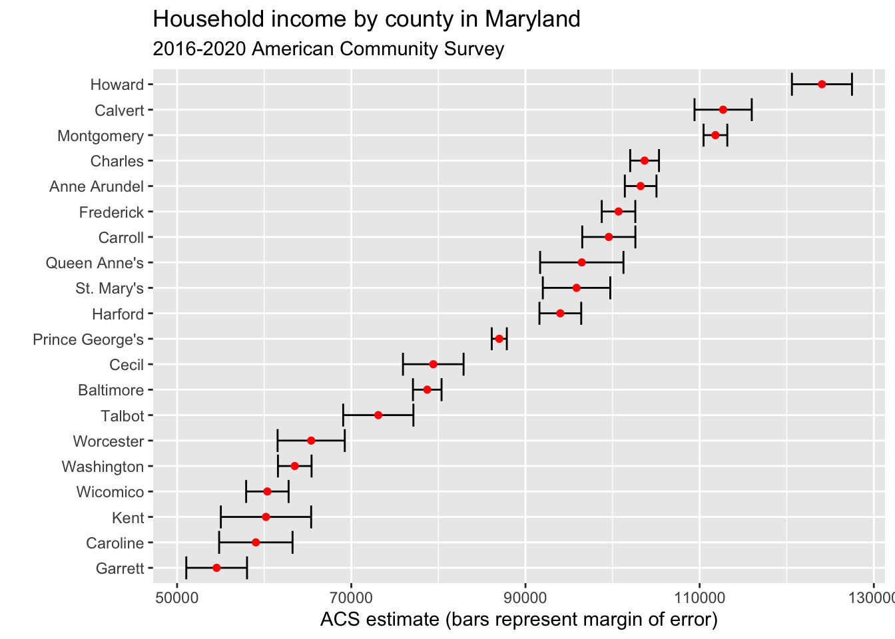

library(tidyverse)
library(tidycensus)24 Intro to APIs: The Census
There is truly an astonishing amount of data collected by the US Census Bureau. First, there’s the Census that most people know – the every 10 year census. That’s the one mandated by the Constitution where the government attempts to count every person in the US. It’s a mind-boggling feat to even try, and billions get spent on it. That data is used first for determining how many representatives each state gets in Congress. From there, the Census gets used to divide up billions of dollars of federal spending.
To answer the questions the government needs to do that, a ton of data gets collected. That, unfortunately, means the Census is exceedingly complicated to work with. The good news is, the Census has an API – an application programming interface. What that means is we can get data directly through the Census Bureau via calls over the internet.
Let’s demonstrate.
We’re going to use a library called tidycensus which makes calls to the Census API in a very tidy way, and gives you back tidy data. That means we don’t have to go through the process of importing the data from a file. I can’t tell you how amazing this is, speaking from experience. The documentation for this library is here. Another R library for working with Census APIs (there is more than one) is this one from Hannah Recht, a journalist with Kaiser Health News.
First we need to install tidycensus using the console: install.packages("tidycensus", dependencies = TRUE). You also should install the sf and rgdal packages.
To use the API, you need an API key. To get that, you need to apply for an API key with the Census Bureau. It takes a few minutes and you need to activate your key via email. Once you have your key, you need to set that for this session. Just FYI: Your key is your key. Do not share it around.
census_api_key("YOUR KEY HERE", install=TRUE)The two main functions in tidycensus are get_decennial, which retrieves data from the 2000 and 2010 Censuses (and soon the 2020 Census), and get_acs, which pulls data from the American Community Survey, a between-Censuses annual survey that provides estimates, not hard counts, but asks more detailed questions. If you’re new to Census data, there’s a very good set of slides from Kyle Walker, the creator of tidycensus, and he’s working on a book that you can read for free online.
It’s important to keep in mind that Census data represents people - you, your neighbors and total strangers. It also requires some level of definitions, especially about race & ethnicity, that may or may not match how you define yourself or how others define themselves.
So to give you some idea of how complicated the data is, let’s pull up just one file from the decennial Census. We’ll use Summary File 1, or SF1. That has the major population and housing stuff.
sf1 <- load_variables(2010, "sf1", cache = TRUE)
sf1# A tibble: 8,959 × 3
name label concept
<chr> <chr> <chr>
1 H001001 Total HOUSING UNITS
2 H002001 Total URBAN AND RURAL
3 H002002 Total!!Urban URBAN AND RURAL
4 H002003 Total!!Urban!!Inside urbanized areas URBAN AND RURAL
5 H002004 Total!!Urban!!Inside urban clusters URBAN AND RURAL
6 H002005 Total!!Rural URBAN AND RURAL
7 H002006 Total!!Not defined for this file URBAN AND RURAL
8 H003001 Total OCCUPANCY STATUS
9 H003002 Total!!Occupied OCCUPANCY STATUS
10 H003003 Total!!Vacant OCCUPANCY STATUS
# … with 8,949 more rowsNote: There are thousands of variables in SF1. That’s not a typo. Open it in your environment by double clicking. As you scroll down, you’ll get an idea of what you’ve got to choose from.
If you think that’s crazy, try the SF3 file from 2000.
sf3 <- load_variables(2000, "sf3", cache = TRUE)
sf3# A tibble: 16,520 × 3
name label concept
<chr> <chr> <chr>
1 H001001 Total HOUSING UNITS [1]
2 H002001 Total UNWEIGHTED SAMPLE HOUSIN…
3 H002002 Total!!Occupied UNWEIGHTED SAMPLE HOUSIN…
4 H002003 Total!!Vacant UNWEIGHTED SAMPLE HOUSIN…
5 H003001 Total 100-PERCENT COUNT OF HOU…
6 H004001 Percent of occupied housing units in sample PERCENT OF HOUSING UNITS…
7 H004002 Percent of vacant housing units in sample PERCENT OF HOUSING UNITS…
8 H005001 Total URBAN AND RURAL [7]
9 H005002 Total!!Urban URBAN AND RURAL [7]
10 H005003 Total!!Urban!!Inside urbanized areas URBAN AND RURAL [7]
# … with 16,510 more rowsYes. That’s more than 16,000 variables to choose from. I told you. Astonishing.
So let’s try to answer a question using the Census. What is the fastest growing state since 2000?
To answer this, we need to pull the total population by state in each of the decennial census. Here’s 2000.
p00 <- get_decennial(geography = "state", variables = "P001001", year = 2000)Now 2010.
p10 <- get_decennial(geography = "state", variables = "P001001", year = 2010)Let’s take a peek at 2010.
p10As you can see, we have a GEOID, NAME, then variable and value. Variable and value are going to be the same. Because those are named the same thing, to merge them together, we need to rename them.
p10 %>% select(GEOID, NAME, value) %>% rename(Population2010=value) -> p2010
p00 %>% select(GEOID, NAME, value) %>% rename(Population2000=value) -> p2000Now we join the data together.
alldata <- p2000 %>% inner_join(p2010)And now we calculate the percent change.
alldata %>% mutate(change = ((Population2010-Population2000)/Population2000)*100) %>% arrange(desc(change))And just like that: Nevada.
You may be asking: hey, wasn’t there a 2020 Census? Where’s that data? The answer is that it’s coming, slowly - the Census Bureau has a schedule of releases.
24.1 The ACS
In 2010, the Census Bureau replaced SF3 with the American Community Survey. The Good News is that the data would be updated on a rolling basis. The bad news is that it’s more complicated because it’s more like survey data with a large sample. That means there’s margins of error and confidence intervals to worry about. By default, using get_acs fetches data from the 5-year estimates (currently 2016-2020), but you can specify 1-year estimates for jurisdictions with at least 65,000 people (many counties and cities).
Here’s an example using the 5-year ACS estimates:
What is Maryland’s richest county?
We can measure this by median household income. That variable is B19013_001, so we can get that data like this (I’m narrowing it to the top 20 for simplicity):
md <- get_acs(geography = "county",
variables = c(medincome = "B19013_001"),
state = "MD",
year = 2020)Getting data from the 2016-2020 5-year ACSmd <- md %>% arrange(desc(estimate)) %>% top_n(20, estimate)
md# A tibble: 20 × 5
GEOID NAME variable estimate moe
<chr> <chr> <chr> <dbl> <dbl>
1 24027 Howard County, Maryland medincome 124042 3448
2 24009 Calvert County, Maryland medincome 112696 3287
3 24031 Montgomery County, Maryland medincome 111812 1361
4 24017 Charles County, Maryland medincome 103678 1654
5 24003 Anne Arundel County, Maryland medincome 103225 1817
6 24021 Frederick County, Maryland medincome 100685 1927
7 24013 Carroll County, Maryland medincome 99569 3051
8 24035 Queen Anne's County, Maryland medincome 96467 4785
9 24037 St. Mary's County, Maryland medincome 95864 3872
10 24025 Harford County, Maryland medincome 94003 2398
11 24033 Prince George's County, Maryland medincome 86994 865
12 24015 Cecil County, Maryland medincome 79415 3479
13 24005 Baltimore County, Maryland medincome 78724 1641
14 24041 Talbot County, Maryland medincome 73102 4031
15 24047 Worcester County, Maryland medincome 65396 3856
16 24043 Washington County, Maryland medincome 63510 1930
17 24045 Wicomico County, Maryland medincome 60366 2437
18 24029 Kent County, Maryland medincome 60208 5185
19 24011 Caroline County, Maryland medincome 59042 4215
20 24023 Garrett County, Maryland medincome 54542 3487Howard, Calvert, Montgomery, Anne Arundel, Charles. What do they all have in common? Lots of suburban flight from DC and Baltimore. But do the margins of error let us say one county is richer than the other. We can find this out visually using error bars. Don’t worry much about the code here – we’ll cover that soon enough.
md %>%
mutate(NAME = gsub(" County, Maryland", "", NAME)) %>%
ggplot(aes(x = estimate, y = reorder(NAME, estimate))) +
geom_errorbarh(aes(xmin = estimate - moe, xmax = estimate + moe)) +
geom_point(color = "red") +
labs(title = "Household income by county in Maryland",
subtitle = "2016-2020 American Community Survey",
y = "",
x = "ACS estimate (bars represent margin of error)")
As you can see, some of the error bars are quite wide. Some are narrow. But if the bars overlap, it means the difference between the two counties is within the margin of error, and the differences aren’t statistically significant. So is the difference between Calvert and Montgomery significant? Nope. Is the difference between Howard and everyone else significant? Yes it is.
Let’s ask another question of the ACS – did any counties lose income from the time of the global financial crisis to the current 5-year window?
Let’s re-label our first household income data.
md20 <- get_acs(geography = "county",
variables = c(medincome = "B19013_001"),
state = "MD",
year = 2020)Getting data from the 2016-2020 5-year ACSAnd now we grab the 2010 median household income.
md10 <- get_acs(geography = "county",
variables = c(medincome = "B19013_001"),
state = "MD",
year = 2010)Getting data from the 2006-2010 5-year ACSWhat I’m going to do next is a lot, but each step is simple. I’m going to join the data together, so each county has one line of data. Then I’m going to rename some fields that repeat. Then I’m going to calculate the minimium and maximum value of the estimate using the margin of error. That’ll help me later. After that, I’m going to calculate a perent change and sort it by that change.
md10 %>%
inner_join(md20, by=c("GEOID", "NAME")) %>%
rename(estimate2010=estimate.x, estimate2020=estimate.y) %>%
mutate(min2010 = estimate2010-moe.x, max2010 = estimate2010+moe.x, min2020 = estimate2020-moe.y, max2020 = estimate2020+moe.y) %>%
select(-variable.x, -variable.y, -moe.x, -moe.y) %>%
mutate(change = ((estimate2020-estimate2010)/estimate2010)*100) %>%
arrange(change)# A tibble: 24 × 9
GEOID NAME estim…¹ estim…² min2010 max2010 min2020 max2020 change
<chr> <chr> <dbl> <dbl> <dbl> <dbl> <dbl> <dbl> <dbl>
1 24011 Caroline County… 58799 59042 56740 60858 54827 63257 0.413
2 24039 Somerset County… 42443 44980 39092 45794 40432 49528 5.98
3 24041 Talbot County, … 63017 73102 60081 65953 69071 77133 16.0
4 24017 Charles County,… 88825 103678 87268 90382 102024 105332 16.7
5 24019 Dorchester Coun… 45151 52799 43470 46832 49020 56578 16.9
6 24047 Worcester Count… 55487 65396 52749 58225 61540 69252 17.9
7 24045 Wicomico County… 50752 60366 49313 52191 57929 62803 18.9
8 24035 Queen Anne's Co… 81096 96467 78068 84124 91682 101252 19.0
9 24023 Garrett County,… 45760 54542 43729 47791 51055 58029 19.2
10 24031 Montgomery Coun… 93373 111812 92535 94211 110451 113173 19.7
# … with 14 more rows, and abbreviated variable names ¹estimate2010,
# ²estimate2020So according to this, Somerset and Caroline counties had the smallest change between 2010 and 2020, while all other jurisdictions saw double-digit percentage increases.
But did they?
Look at the min and max values for both. Is the change statistically significant?
The ACS data has lots of variables, just like the decennial Census does. To browse them, you can do this:
v20 <- load_variables(2020, "acs5", cache=TRUE)And then view v20 to see what kinds of variables are available via the API.
24.2 “Wide” Results
Although one of the chief strengths of tidycensus is that it offers a, well, tidy display of Census data, it also has the ability to view multiple variables spread across columns. This can be useful for creating percentages and comparing multiple variables.
24.3 Sorting Results
You’ll notice that we’ve used arrange to sort the results of tidycensus functions, although that’s done after we create a new variable to hold the data. There’s another way to use arrange that you should know about, one that you can use for exploratory analysis. An example using median household income from 2020:
md20 <- get_acs(geography = "county",
variables = c(medincome = "B19013_001"),
state = "MD",
year = 2020)Getting data from the 2016-2020 5-year ACSarrange(md20, desc(estimate))# A tibble: 24 × 5
GEOID NAME variable estimate moe
<chr> <chr> <chr> <dbl> <dbl>
1 24027 Howard County, Maryland medincome 124042 3448
2 24009 Calvert County, Maryland medincome 112696 3287
3 24031 Montgomery County, Maryland medincome 111812 1361
4 24017 Charles County, Maryland medincome 103678 1654
5 24003 Anne Arundel County, Maryland medincome 103225 1817
6 24021 Frederick County, Maryland medincome 100685 1927
7 24013 Carroll County, Maryland medincome 99569 3051
8 24035 Queen Anne's County, Maryland medincome 96467 4785
9 24037 St. Mary's County, Maryland medincome 95864 3872
10 24025 Harford County, Maryland medincome 94003 2398
# … with 14 more rowsIn this case we don’t save the sorted results to a variable, we can just see the output in the console.